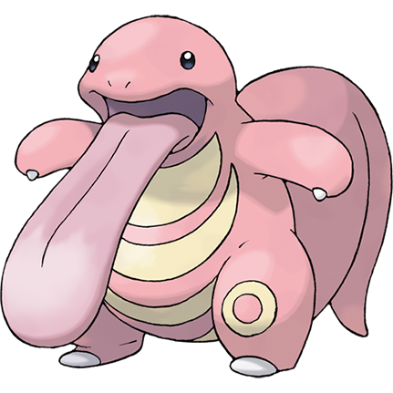

Hurray! You’ve saved Lickitung!
As a token of thanks, he’s given you this Narrative Badge.
Give your activities a story! A good narrative invests players emotionally in what they are doing. Use elements of mystery to draw people in, then immediately ask them to do something! Don't make participants wade through long lists of instructions. Have them learn by doing! Well-designed games use their first level as a tutorial, so your initial activity should not only set up the story, but prepare players for what they'll need moving forward. As much as possible, all subsequent tasks should also directly relate to your narrative. Story and class progress should be intertwined. It's all about seamless thematic integration!